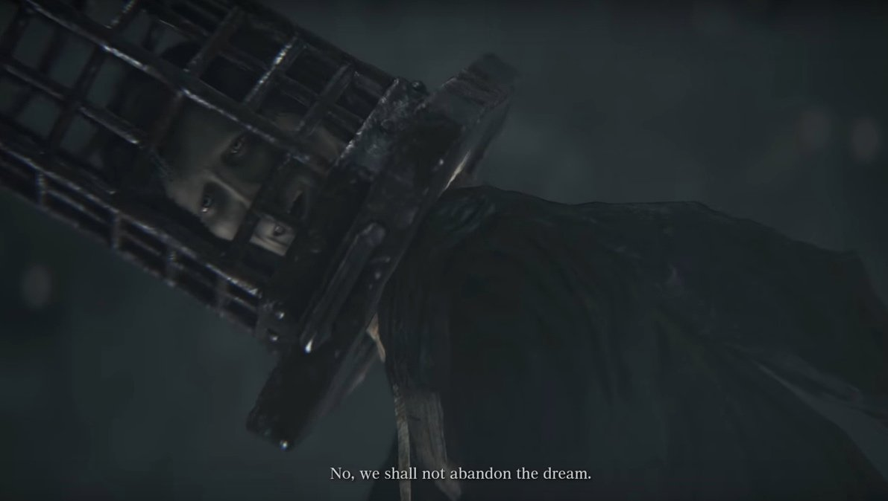

Nightmare of Mensis is a location in Bloodborne. You arrive here from the Lecture Building 2nd Floor exit.
General Information
- Previous: Lecture Building 2nd Floor
- Next: Hunter's Dream
- Suggested Level: 50 to 70
- Suggested Upgrade: +7 to +9
- Bosses: 2
- Lamps: 2
- Insight: ??
Lecture Building Map

NPCs in the area
Bosses
Miniboss
Items
Weapons
Consumables
- Kin Coldblood x6
- Frenzied Coldblood x3
- Madman's Knowledge x2
- Blood Stone Chunk x15
- Blue Elixir x2
- Blood Vial x4
- Iosefka's Blood Vial
Specials
- Eye Rune
- Iron Door Key
- Moon x2
- Blood Rock
- Tempering Damp Blood Gem x2
- Yellow Backbones x2
- Inflicted Organ
- Nourishing Damp Blood Gem
- Arcane Damp Blood Gem
- Damp Bloodtinge Gem
Enemies
- Silver Beast
- Parasite Larva - spawned by Loran Silverbeasts upon death
- Giant Lost Child
- Chime Maiden
- Mergo's Attendants (All Varieties)
- Mergo's Chief Attendant
- Skeletal Puppets
- Nightmare Apostles (spiders)
- Rabid Dog (Crowhead variety)
- Carrion Crow (Doghead variety)
- Maneater Boar
- Winter Lantern
Notes
- The Brain of Mensis produces a passive effect, causing the player to generate Frenzy. This effect is disabled by breaking line of sight with the lit window. The player's Frenzy will continue to build for a few seconds after breaking line of sight with the lit window.
Nightmare of Mensis Walkthrough
Heading to the Castle
Progressing forward from the entrance of the area, you'll encounter a Loran Silverbeast crouched behind a wall. These are strong but not too tough, and are very vulnerable to fire, but they do have a bolt retaliation that hits a wide area if you stay close for too long. They also spew out two Parasite Larvae upon dying, though this can be countered by killing them with fire or a visceral attack.
Continue left from the first Silverbeast to find the first lamp of the area, killing a Scurrying Beast as soon as the hill starts to steepen, but before picking up the Frenzied Coldblood(9). You'll find the lamp tucked behind a ruined wall. At the top of the rise the area opens up and splits into two side paths; ahead of you is a large castle. Take note of the windows on the left - if you remain in the open a light will shine from within the castle causing you to build up Frenzy and dealing damage. You can hide behind taller walls to avoid this, and you can use it to your advantage, as enemies caught in the open when you are hidden will take damage from the light as well.
- Right leads past some stone-throwing Yetis and to a device that does not function yet - you can lure these Giants down the path a little way to let the frenzy kill them if you're having trouble, but their attacks are slow and well-telegraphed. At the end of the path is the Mergo's Loft: Base lamp and a lift leading up, which is unavailable until later.
- Left from the main lamp, you will run into three separate Silverbeasts, one standing in the open, one at the start of the bridge leading to the next area, and one patrolling at the end of the bridge. They can be dealt with easily by luring them out where the orange light will start to hit them, then running back to the lamp where you can take out what remains of their health from the relatively safe area behind the wall. Once you defeat them and cross the bridge, you will reach a path leading to the entrance to the castle, which is mercifully out of sight of the frenzy-inducing orange light. Along the path, there will be a total of four Yeti lying in wait. You can find a Frenzied Coldblood(9) just before the first two Yetis hidden in the rocks on the left, while two more stand near the castle's entrance door (though one remains sleeping until you approach). The first can be safely dealt with, but the remaining three are somewhat trickier, as the one on the right that is awake will fling rocks at you as soon as you enter his line of sight. If you try to deal with the one on the left first, you will do so under constant barrage from behind, and it's very easy to get stuck in the rocks while trying to fight and avoid the flying boulders. However you ultimately choose to deal with the threats, head to the door and take a left before entering, where you can find a Blood Stone Chunk just out of sight by the castle wall.
- A slightly easier method is to simply run to the right first, where you can draw the two Yetis back behind a large rock hill and deal with them without being attacked by the third, but this requires you to fight two at once.
- Alternatively you can use a Blue Elixir to make yourself harder to see and sprint past the whole area. This keeps you well out of the way of the frenzy build up and the Silverbeasts won't react to you until you're literally running past them, so you can get out of the way quickly.
Finding the Host of the Nightmare
Moving into the castle, you will spot a room full of Nightmare Apostles. Before dealing with that room, take an immediate right onto a short staircase, then head into the opening on the right which leads to a small balcony, and more importantly, the Bell Ringer for the area. Kill her to prevent her from spawning invaders, and pick up the Kin Coldblood(10). Exit the balcony and take a right again, where you will spot a lone Nightmare Apostle hanging from the ceiling. Knock it down with a pebble and kill it, then walk slowly along the small bridge to the left, where you will find another two hanging from above, so back up and fight them in the safe corridor.
Now, to deal with the Nightmare Apostles. Once the ones in the main room start falling, they all drop in together to fight, and are capable of high damage quick attacks and can easily overwhelm you before you can even get a chance to fight. Complicating things even further is the Large Nightmare Apostle in the center of the room, whose attacks have a tremendous range. Fortunately, however, it can't get through either of the two doors leading out of the room, and if you head back the way you came, the normal ones might get stuck trying to follow you as well. Once the small ones are dead, carefully deal with the bigger bug and continue to the far end of the room, where you will find 6 Shaman Bone Blades on a body.
Head right out of the room and across a bridge, but be careful - there's a hunter (Choir Intelligencer Edgar) waiting to fight. He uses a Ludwig's Holy Blade and a Rosmarinus, but he has relatively low health and should go down easy. He is easily parried so bait his attacks and do massive damage. In the next room, head to the left before going down to find a chest containing 2x Yellow Backbones. You'll see curious little armoured enemies wandering around, down the stairs; these are Mergo's Attendants which unlike almost every enemy you've faced in this game, are largely ambivalent towards you. If you get close enough they'll aggro but largely they'll just wander on their own paths. Don't take this to mean that they're easy though, they normally come in small groups of two or three and it is quite easy to get staggered by them.
Once you've fought the Attendants -or maneuvered around them-, look to the right side of the room, where you should spot a Frenzied Coldblood(9) and a green light at the far end of a corridor. Go down that way and activate the lift shortcut leading to bring you back to the lamp if you took the right route before the bridge, and activating the previously inaccessible lift. If you'd like to change your spawn point and/or spend some of those blood echoes, then breathe a well-earned sigh of relief and head back up.
Back in the room you encountered Mergo's Attendants for the first time, take the big opening straight ahead of the stairs. Take an immediate right to find a Beast Blood Pellet guarded by a few of Mergo's Attendants behind a screen, then go back the other way. There are several more Attendants blocking your path. Deal with them and continue on to a big flight of stairs, but before heading down them, 2x Blue Elixirs wait at the end of a long, curved path to the left of them. At the bottom of the steps, you'll find a Mergo's Chief Attendant wielding a chain and axe, and what's more, her attacks deal rapid poison damage. Her move set is quite similar to that of the Executioner (or the Butchers from Dark Souls). Stay clear of the huge axe, dodge the chain and make sure to time your parries just right. Once she is down, carefully move forward and grab the Madman's Knowledge on the body to the left, behind a cage.
There are huge pits just beyond the Chief Attendant, so watch your step as you cross through the room. There are a few of the little Attendants in this area, and to the right there are a few that wield crowsbows that inflict rapid poison damage, including one around a wooden screen, attempting to ambush you. It seems as though they are guarding the second Chief Attendant of this area. Fight them one at a time, being mindful of the pits, and continue on to another lift - but before using it, head to the left of it to grab a pair of Lead Elixirs.
Up the lift, you'll emerge into an open area outside the castle. To the right you'll spot some truly bizarre enemies - crows with the heads of dogs, and dogs with the heads crows; when fighting them it's best to remember that the head determines the attack, while the body determines the movement. So deal with them swiftly and walk up the stairs to the right. Go right as soon as you reach the top to see a hanging cage containing an item and another dog-headed crow. Sprint-fall onto it (don't jump) and quickly kill this freak of nature to nab a Tampering Damp Blood Gem(5), then return to the stairs and keep going. Head forward, watching out for a pair of hybrids waiting to drop on you from above, and you'll see another pair of levers and an open cage with a button on the bottom. Before proceeding, head left and down the stairs to face a couple crow-headed doggos for a Blood Stone Chunk and a Kin Coldblood (10). Hop inside the buttoned cage, and drop down below to activate another shortcut to the 2nd lamp from earlier.
Coming back from the shortcut, you'll see a doorway to your left, take it. Go across the bridge and you'll meet another new enemy, the Skeleton Puppet. These guys are ridiculously fast, but they spend most of their efforts dodging your attacks rather than launching their own, though they can still flank you very easily and catch you off guard. The corridor to your left only leads back to the start of the bridge, so steel your nerves and get ready to go through the door and face your worst nightmares...

BOSS FIGHT: Micolash, Host of the Nightmare
After the tedious fight with all the chasing and countless Skeleton Puppets, go through the area and pick up some of the items you may have missed - you'll want to make sure you find the Iron Door Key, at the very least, but you can also find some Quicksilver Bullets, 4x Blood Stone Chunks (1 off of a body, 3 more off of a Scurrying Beast), 4x Blood Vials, another Kin Coldblood(10), and 3x Sedatives throughout this labyrinth. Head out of the top of the maze (where you found the hole to drop down and finish Micolash off) and you'll see that the bridge has now been lifted and you can head over the Mergo's Loft Middle lamp.
It's highly advisable that you equip as much frenzy resistance as you can, if you haven't already, because it's time to face the source of that orange light once and for all. The Deep Sea rune and the Graveguard Set (both available in Forbidden Woods) are invaluable here. Once you're ready, head straight from the lamp and into the next part of the level.
Finding the Blood Rock
Go up the stairs to the left and immediately turn to your right to find 2x Blood Stone Chunks guarded by two dog-headed crows and a crow-headed dog. Keep going up the long staircase and take another right, where you'll see a familiar green glow - another shortcut.
Ride the cage elevator down to activate it, but keep an eye on the wall as you descend - you should notice an opening. Roll into it (don't go too early, or you'll splatter yourself on the ground below) and you'll find yourself in a secret passage. Head along it, and continue past the doorway to your left to find a chest with an Inflicted Organ in it. Return to the doorway and go through it. Here, you'll have to fight a Winter Lantern on a long bridge. Remember, these annoying enemies cause Frenzy buildup quickly as soon you are in their line of sight, so watch its movement pattern and use the rocks on the bridge for cover. If you can sneak up behind it and get a charge attack in you can do a lot of damage without building up any Frenzy. Once you've killed it, carry on to the middle of the bridge and make sure to look to your right as you near the building at the end to spot a Kin Coldblood (11).
Keep moving, and you'll find a pair of Winter Lanterns waiting for you. Don't try and take both on at once, instead, pull the one that is patrolling back to the middle section of the bridge, avoiding her grab attack all the way. You can use the structure in the middle of the bridge to break the line of sight if you happen to build up too much frenzy. Once she is down, sneak up on the stationary one and kill her as you did the first one. Once they're both down, pick up the Tampering Damp Blood Gem(5) next to the second, then head into the building at the end of the bridge. There are four spiders in here. These are different to the Nightmare Apostles that you encountered earlier in the level, in that they have an AOE attack they can use if you don't kill them quickly enough, and they have human heads. Kill the four spiders then head out out of the far end of the room and down the stairs. You'll spot a lever at the end of the next room, run across and activate it. You'll be treated to a cutscene showing the Brain Of Mensis being dropped into a bottomless pit.
Once that's over, drop into the hole behind you (to the right facing away from the lever) and kill the two spiders. You can carefully cross the beams and kill the Winter Lantern across you if you want; you'll find a Choir Bell in the chest it is guarding. Whether you go for it or not, leave the building through the exit behind you, where it's now safe to cross the bridge. Head across and enjoy the trail of loot -you'll find 4x Great One's Wisdom, a Madman's Knowledge, an Arcane Damp Blood Gem(5), and a Damp Bloodtinge Gem(5). Once you've got it all, return to where the giant brain was and carefully drop down onto the stone path around the bottomless pit. On a body at the other side, you'll find the only Blood Rock in the main game (outside of the Chalice Dungeons), an item which allows you to bring a weapon from +9 to +10. Opposite the body you'll find a small hole in the wall which will take you back to the bridge where you fought the hunter, way back at the start of the level. From there, you can find your way back to the shortcut back to the Mergo's Loft: Base lamp and return to where you fought Micolash to continue on.
Getting The Final Moon Rune
Now that you've dealt with the Brain Of Mensis, you can get the final Moon rune. If you got the Blood Rock you'll be in the right place, in the area where you first encountered the Mergo's Attendants. Head down to the area where you encounter the first Mergo's Chief Attendant and you'll see that there is a new cage lift there. Kill the enemies, or sprint around them and get in the cage which will lower you into the darkness.
When the cage reaches the bottom, you'll be in pitch black (not unlike when you visit The Abyss in Dark Souls). Get out of the lift, equip your torch and go forward, eventually the Brain Of Mensis will come into view. Don't worry, it can't hurt you now. Approach its largest eye and use the Make Contact gesture. Hold it for about 30 seconds/1 minute and you'll eventually be granted the Final Moon rune. Killing the brain is not difficult as it does not fight back, but it does have a large amount of health. Killing it will reward you with Living String, a ritual material necessary for the Great Pthumeru Ithyll Chalice Ritual, but leaving will not have any punishments.
Path to Mergo's Wet Nurse
From the Mergo's Loft: Middle lamp, head back to where you jumped down to get the Blood Rock, but instead of going right and pulling the lever to the shortcut, take a left. You'll spot two Shadow Of Yharnam enemies. One with a katana and one with the candle and sword. They're not as strong as their boss counterparts you encountered in Forbidden Woods so fight them as you would any other enemy. Once they're gone, continue up the stairs, being careful of the third Shadow waiting to throw fireballs at you from above. Past the third shadow, the path splits into three. The narrow path to the left leads to a body with a pair of Blood Stone Chunks on it, the lower path leads to a dead end, and the path up the stairs takes you where you want to go next.
There's a Maneater Boar waiting there with its back facing you, but don't get cocky - there are an other two walking towards you just down the road, so make haste of this one. Rather than facing the latter two at the same time, head down the street until they start walking, then turn around and hide near where you fought the first one. They should separate, allowing you to lure them out one at a time. Once both are taken care of, grab the Nourishing Damp Blood Gem(4), and the 2x Kin Coldblood(11) to the left of the road.
Further down the road, you'll spot another set of Shadows - four this time. Try to pull the three sword-wielding Shadows away from the one shooting fireballs, or you'll quickly find yourself overwhelmed. Once they've been taken care of, go to the left, down a flight of stairs, and engage two more Shadows. Defeat them, and you'll find the Chime Maiden for the second part of Nightmare of Mensis. Kill her and claim the 2x Blood Stone Chunks off a body nearby, but don't head back to the main path just yet. In this balcony area, you should find another set of stairs leading down into a flooded passage. Follow it, and you'll find a Scurrying Beast holding 3x Blood Stone Chunks (along with a spectacular view of the full moon).
NOTE: The Boars' charge attack deals massive damage to all characters in its path, and can be used strategically to dispatch other enemies. In other words, if you bypass the main road with the Boars by dropping down where the path branches, and take the waterway to the Bell Maiden, then you can flank the last group of Shadows (mentioned in the next paragraph). At this point, sneak back to the main road and agro the Boars, but do NOT let them catch you--RUN as soon as they notice you, no later than they squeal to signal their charge. They will bowl through the group of Shadows killing some and heavily damaging others, while the Shadows actually retaliate and kill the Boars with their powerful Chikage combos.
Return to the main road now, and go up the stairs you passed to get to the Chime Maiden. At the top you'll find a sobbing woman in white: Yharnam, Pthumerian Queen. You can't do much with her now, so head down the stairs to her left (directly opposite where you came up) to find a chest holding Iosefka's Blood Vial. In the doorway nearby you'll find one last lift, this one giving you a shortcut from Mergo's Loft: Middle, and if you've been activating all of them as you've gone through Nightmare of Mensis, you'll now have a chain of lifts all the way from the lamp at the very bottom of the castle. Once you're ready, head through the big door, enter the lift, and get ready to fight the final boss of Nightmare of Mensis.
BOSS FIGHT: Mergo's Wet Nurse
Nightmare of Mensis Maps
you can knock the spiders off one at a time from the bridge and they have pathing that will bring them up the stairs to kill them one at a time

- Anonymous
- Anonymous
1. Walk off the elevator to get to the bridge. Don't roll.
2. If you're having trouble with the Winter Lanterns, go spend all of your insight. Insight and frenzy resizt are inversely proportional; ie. the more insight you have, the more susceptible you are to frenzy. You can buy a Blood Rock for 60 insight at the Hunter's Dream after Mergo's Wetnurse, so you may want to wait until after that if you're close.
- Anonymous
- Anonymous
Man, that italic comment about the boars is the best free blood echo farming in the game. Spawn at Mid-tower lamp, run up stairs, past 3x Shadows, past 3x boars, hook a sharp left as soon as you see 4x shadows. The boars and shadows will massacre each other, leaving you 1-2 half-dead jerks to mop up, and ~20-30k echoes. Rinse and repeat.
- Anonymous
The boars can be lured into the moat (line up their charge with the ledge and dodge) where they will work their way around to their original spot, fighting all the enemies in their path. The lower set of Shadows will kill the first pig, while the second pig will fight and kill most of the set of 4. Easiest way to clear this spot.
- Anonymous
If ur having trouble read the guide were the bell maidens are first make a b line to them and cut the pvp out :) and wen u die thay wont respawn and you can enjoy the lvl without interuption
- Anonymous
Nightmare of bull**** is more like it. Now I just want the game to be over
There are a lot of DISHONOURABLE invaders in this area. Back in Dark Souls 2, we Dragon Covenant folks used to flex on each other with pure honour and testosterone. Then there's this place. Where's the HONOUR in letting The Brain of Mensis fight for you?
- Anonymous
- Anonymous
I was pushed out of the small cage elevator by a mannequin enemy ***** this
- Anonymous
I honestly think Nightmare of Mensis is the most intimidating name for a location in the series
- Anonymous
Been playing this game for about a week now really enjoying it until that room with the spiders I had to turn the game off is this the only time they show up or have you got to fight a lot of them? Because if you do I can't see myself finishing it
- Anonymous
Well, I think I have a new favourite thing to do in Bloodborne. Wait by the first lamp ringing the sinister bell, then running up and tossing numbing mists on unsuspecting hosts as they cross the frenzy paths.
The whole first stretch from the lamp to the first shortcut is such a pain, I usually sprint past everything, unlock the shortcut, then double back. Classic Soulsborne design - the enemies are waiting for you to come in the entrance, so if you're back-tracking you catch them all by surprise - especially Edgar.
- Anonymous
"Sneak up on the winter lanterns." Lmao. Blue elixir is a godsend for sneaking up on enemies, but even that's completely useless against them.
- Anonymous
Huh, Margo's Attendants really do just walk around peacefully. I find that the attendants only aggro one at a time, and if you back off about one meter, they go back to their wandering. Sometimes they'll even bump into the hunter, walk several paces, turn around and stare for a sec. Bizarre little fellas. I wonder if insight or armor affects their behavior.
- Anonymous
Probably one of the best farming areas in game. With all three moon runes equipped, I was able to get around 50k blood echoes in the middle loft alone
- Anonymous
So, not amazing at this game, but one trick I figured out for the spider room was to do the steps said at first (pebble the lone and lure the two from the bridge), but then to slowly pebble each spider and kill them one at a time. It's slow, yes, but it doesn't draw the others if you do it from the bridge. Helped me avoid the spiders without them chasing me
- Anonymous
I've seen a few people saying they have trouble rolling into the window from the cage elevator, as someone who's got a platinum trophy using no quides, and beaten the game 5 times, I gotta say, that window jump kills me 100% of the time if I try to do it going downwards, i always gotta wait and ride the elevator back up to jump into it haha. anyone saying that window jump isnt hard and they're just bad at the game, nah, we just bad at this single jump.
- Anonymous
To the people telling other complainers to "git good" with that stupid childish phrase... i just beat those three Winter Lanterns, they do have 360 vision. I WALKED up behind the third one slowly, it STILL TURNED! Not that it matters, they barely phase my character...
- Anonymous
Eileen's crow hat and the ashen set has better frenzy resistance... >.<
- Anonymous
Maybe if it was those *****ing knock-off spiders from the Rom fight.. Sure.... Cool... I'm game. But that's not the case.... THAT'S A FULL BLOWN SPIDER. Whoever came up with that spider at FS can drink bleach. ***** them, my arachniphobia is literally skyrocketing
- Anonymous
its not that bad, i beat it just now on my 4th play through. I will admit the frenzy***** needs to be toned down its unfair even with all the resistances.
- Anonymous
- Anonymous
I don’t see why people have such a hard time with this place, it’s not difficult just tedious. Farron Keep in ds3 was worse imo
- Anonymous
- Anonymous
Is anyone else going to wonder why you can find an iosefka's blood vial here
- Anonymous
this area was fine until i went to find the Brain of mensis. Not only are the brain trusts impossible to fight, I also get invaded, AND worst of all rolling into that window from the elevator has killed me more times than any boss in this game, combined, period.
- Anonymous
need help a this part, im at the first lantern and get get trough that part
- Anonymous
Tempering blood gemstone(5) was not there, instead there was an Arcane damp blood gem(5)
- Anonymous
OK this map SUCKS! Compared to the other ones it looks like crap; why has no one made a better map yet?!?
- Anonymous
- Anonymous
- Anonymous
summary: run like hell, run up stairs fighting dark souls enemies, send elevators down, send elevators up, run like hell, drop stinky brain, use elevators, run around chasing silly man, kill silly man, use elevators, battle of pigs and bad bosses, kill invisible elephant ninja, win
- Anonymous
Fun fact, the word "Menses" means the blood discharged from the uterus during menstruation. Think about it.
- Anonymous
- Anonymous
how can you possibly say that you can sneak up on something that has a 360 degree vision? this game is a piece of crap, 90% bugs and 10% skill, i have lost hundreds of thousands of echoes due to broken hitboxes and broken animations. whoever tested this game needs their eyes poked out and hands chopped off so they wouldn't "test" games anymore, oh, and don't tell me to git gud because these games are not about that, the souls series is the pinnacle of bad programming and incorporated frustration
- Anonymous
you can draw the nightmare apostles (spiders) from their suspended rest one at a time to make the area after the stone throwing giants a bit easier... I started by taking the stairs to the right after entering the castle, kill the single hanging spider as mentioned above and the two that drop onto the bridge. After that I shot the giant spider (pebble works as well) and retreated back to the entrance where it can't fit. Stay out of reach and 3-5 oil canisters with molotovs take it out relatively quick (depending on whether you shot the spider or threw a pebble at it) afterwards I went back to the bridge and shot/threw pebbles at the remaining spiders one by one and met them at the bottom of the stairs to pick them off one at a time.
- Anonymous
This area causes me more stress than any other souls locations.
- Anonymous
- Anonymous
- Anonymous
The shadows don't wield katanas or chikage. Those, my friend who wrote this misinformation, are called scimitars.
- Anonymous
This area is hard! EVEN AS LEVEL 82! GOD F*** DAM! JFC, first invader killed me when i was afk on the loo!
- Anonymous
This place is literally the worst area in Bloodborne. If there is a sequel with an area that is like this one, I will probably not be buying the game, even though despite this area, Bloodborne is one of my favorites. Every aspect of this place is like a giant middle finger to the player (because the rest of this game is just way too easy they have to do something about that) it is almost entirely unbearable. Trying to draw the enemies out into the frenzied damage areas is absolutely silly as they can fly across the map. And if those crazy guys weren't bad enough they shoot out those horrendous worms which even while targeting are the most ludicrous enemies to attack. There is absolutely no redeeming feature in this area. To make matters even more exceptional, players love hunting other players in this area (evidently a lot of people that play this game were never hugged as a child), and don't expect any help from cooperators because absolutely no one can stand this abominable area. If all of the worst dictators throughout the entirety of history had a demented lovechild with Satan, Nightmare of Mensis would be it.
- Anonymous
Okay the Pitch Black room below all the Attendants and Mannequins that holds the Brain of Mensis? You know the one, right. Yeah. Combed that room left right front back and center and the Mensis Brain IS. NOT. THERE. Any ideas? Did I skip over something?
- Anonymous
use Rune with +all resistances and frenzy effect will be manageable
- Anonymous
They eye rune which should be spawning infront of the two giants right before the Base Loft Lamp is not there. Anybody know why?
- Anonymous
- Anonymous
If merely looking at the place kills you, you're in for a *****ing treat when you enter it.
- Anonymous
I know standing within view of the light causes you to be impaled by spikes which increase the meter but sometimes even in the shadow of the largest rock my bar keeps on filling although the spikes stop. I made it past this area after trying over and over dying probably 30 times but I still have no clue where the "proper safespots" are along the route.
- Anonymous
Can't seem to find them. Friggin chime maidens and their bells keep on calling invaders.
- Anonymous
the area is full of as.h.les who join your world to kill you, taking the advantage of the fact that you're fighting with mobs. like that zone was not enough frustrated
- Anonymous
Is level 71 too low for this place or is it just a random difficulty spike?
- Anonymous
Any purpose of monster in super dark room below castle? Except killing it, because some rare ritual blood doesn't look like a special reward for such sneaky thing.
- Anonymous
its funny because the writer of this page said bonfire instead of lamp hehe...
- Anonymous
Lamp is a bit after entering the zone once you hit the area where you gotta hide or take tic damage + frenzy hang a right and the lamp is past the two giants and the un-usable lever.
- Anonymous
- Anonymous
Does anyone know what happens to the blood covered bride just before the boss? I have both killed her ad left her until after the boss and can't find out unless it's some kind of lore?
- Anonymous
The walkthrough is not too specific here as i see... Mergo's Loft:Base lamp is to the right from the Mensis lamp not left. Left is the way you have to go to proceed forward.
- Anonymous
So after I fought Micolash I went to get the blood rock, but when I came around the start of the castle I found a lift leading down, and it stopped right in the pitch black darkness. I didn't jump down because ***** that, but anyone got a clue about where it leads?
- Anonymous
If I died before getting to the bridge, how in the world do I get to it?! I've been running around and I can't find my way up. Help!
- Anonymous
Added some much-needed detail to the walkthrough, including item locations and monster details. I will continue adding to it later tonight once I get another chance to keep playing.
- Anonymous
There's a minor issue in this area. I say minor, as far as I know it actually 100% stops progression on that character. After killing Micolash, if, for whatever reason, you should happen to die before hitting his lamp (I got killed by rapid poison because I was exploring and got jumped), the bridge is raised, you have no checkpoint past it, and your game is effectively screwed. So, y'know. Fun stuff. Hope they fix this soon, I wanna keep playing on my Bloodtinge build. ;-;
The first Chime Maiden (The one just off the spider filled room) is missing.... when I press the lock on button, a health bar appears for like three seconds before disappearing. Bug?
- Anonymous
At this point, I haven't defeat Micolash. Somehow I managed to summon a player from beyond the boss and he helped me unlock the broken bird cage shortcut that leads to above.
- Anonymous
does this place have something to do with Iosefka? Why is there any her blood vial found in a chest?
- Anonymous
they really love this place. so, if you're new here, or just want to get through this area, do go offline. ***** vilebloods.
- Anonymous
How anyone would realize to back track and find an obscure door to continue on in this level is beyond me.
- Anonymous
- Anonymous
The spiders can be dealt with very easily. Here's how. After killing the crime maiden, stay on the upper level. Use your pebbles to knock the little ones down one at a time. They'll fall, alone, and come to you. Rinse, repeat. Once the little guys are dead, activate the big one and stand at the top of the first steps, and you should be able to hit the big girl through the handrail. She can hit you but not move to you. Be careful.
- Anonymous
So I accidentally used a bold hunter's mark right after the Micolash boss fight and now I can't get back because of the bridge switches, is there anyway to correct my mistake and still have a chance to be able to kill Mergo's Wet Nurse??
- Anonymous
- Anonymous
Wait for the 4 shadows to turn around. Go invisible at the base of the stair in the path of the 4 shadows. When they return charge a large transformed swipe and take out all 4.
- Anonymous
Spiders right in the entrance of the building can be singled out, just shoot each one of them from the top of the bridge near the bell-ringer,careful not to hit the big one! They'll run around and up the stairs to meet you, one at a time. Then you can start the fight with the big one from the top of the bridge and land many hits on it before it even lands (and a nasty plunging strike), you can probably kill the big one after dodging only one hit or not even that. This trivializes that room.
- Anonymous
I had been struggling and getting impatient with the first half of the level leading up to the spiders and the elevator to Mergo's base. Came back to the game and first run through, got invaded. Strangely enough, invader ran straight up to me, bowed, and pointed to the elevator. My random hero pulled the lever and opened my path up, saving me the frustration I'd dealt with for hours. Then he jumped off a bridge. Thank you sir/mam
- Anonymous
- Anonymous
Um someone help me. Always when i try go help someone at nightmare of mensis, it says something about chariot :/ and then i invade to others world as purple. Not red. Pls explains?
- Anonymous
Right, what is this place and why can you see it from the Nightmare Frontier
With Frontier meaning some sort of border, was the NF the first 'attempt' of a dream realm to contact the great ones? Was it a product of the lecture buildings staff? There's a lot of eyes and stuff around there, kinda like they were doing some experiments. And it's bizzarre that one floor leads to the NF, one leads to NoM. Is the NF the border to NoM (as you can actually see the tower building thing in the Mensis from the Frontier)
I personally believe that the nightmare is one humongous place that has seperate islands (much like the tower things in the hunters dream) and the frontier was their first step into that realm. But i'm not sure at all, it could be anything
Thoughts fellow hunters?
- Anonymous
You can also use Blue elixirs to just run past the brain trusts and spiders on your way to the lever that drops the mother brain. Have sedatives handy just in case.
The DLC is coming and we still do not have the map. Any news?
- Anonymous
- Anonymous
died after dropping brain, before finding elevator have to drop brain again?
- Anonymous
- Anonymous
God ***** I'm not Ezreal, when will there be a map available?


{kind=link}
{kind=link}
Path to wet nurse section of this is a mess. especially the beginning. Where you drop down to get blood rock is not next to the path up past the shadow enemies. Confused the crap out of me.
0
+10
-1